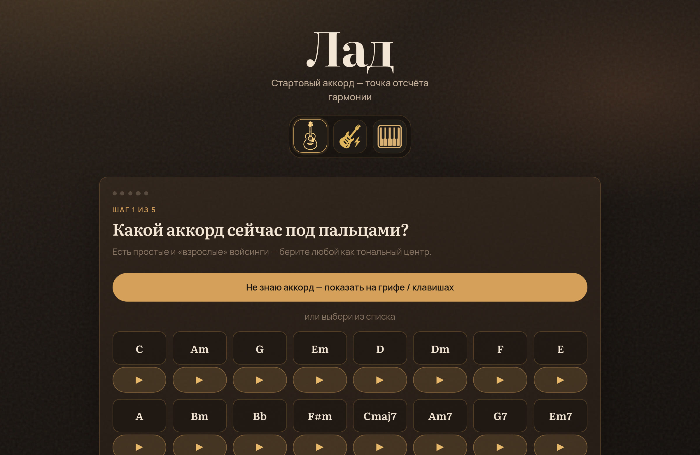

v1От аккорда
Быстрый совет у грифа
- Стартуешь с аккорда — или узнаёшь его по грифу / клавишам
- Получаешь гармонические ходы и аппликатуры
- Слушаешь акустику, дисторшн или рояль
- Короткий путь — без карты и формы песни
Отличие: карманный помощник. Знаешь аккорд → сразу получаешь ходы.
Открыть версию 1